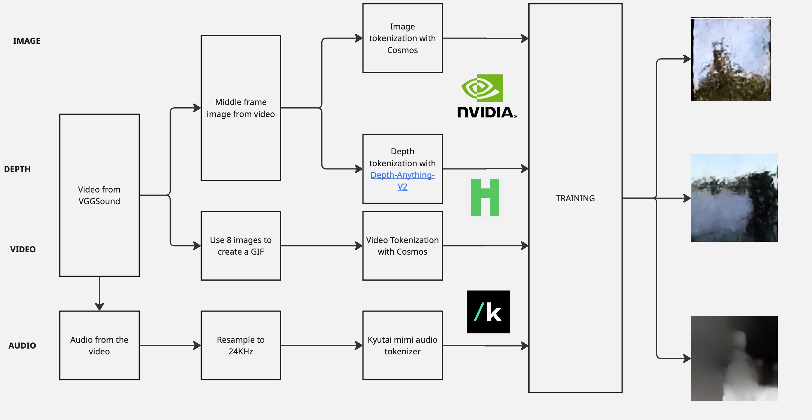
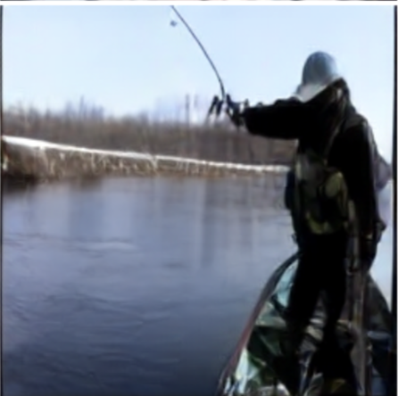
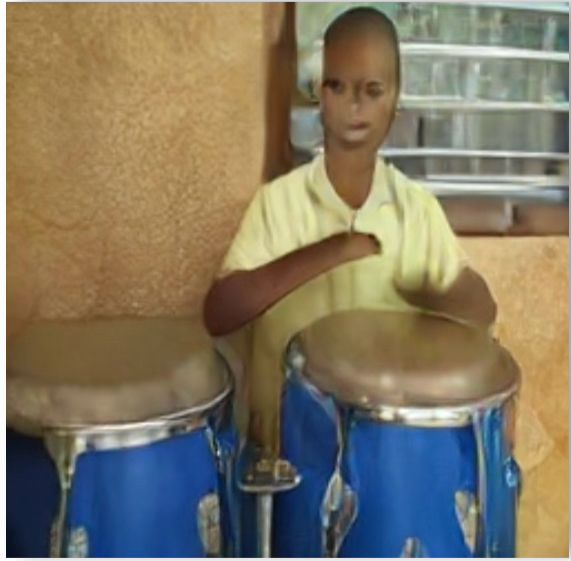
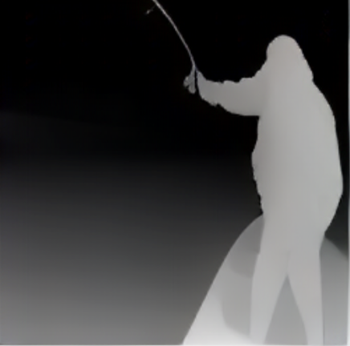
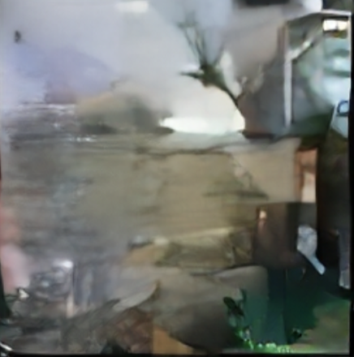

The nano4M project, developed for the COM-304 course at EPFL, is a minimalist multimodal
model inspired by 4M. It excels in diverse tasks, supports fine-tuning for specialized applications, and enables flexible any-to-any multimodal generation.
Our work includes a causal Transformer for text generation, an encoder-only Transformer for image generation,
and a multimodal encoder-decoder for tasks like in-painting and cross-modal generation.
For the extensions, our initial goal was to synchronize audio and video generation and implement tokenizers from scratch.
This page summarises the pipeline and the early—still rough—results.
Model Capabilities
Text Generation
A decoder-only Transformer enables autoregressive text generation, trained on a simple dataset to produce coherent sequences.
Image Generation
An encoder-only Transformer supports autoregressive and masked image generation, enabling tasks like inpainting.
Multimodal Generation
An encoder-decoder model enables any-to-any generation across text and images.
Extensions
Multimodal Dataset & Tokenisers

Comprehensive diagram of our data-collection, preprocessing, and tokenisation pipeline showing the flow from raw multimodal data to discrete token representations.
Results & Performance Analysis
Cross-Modal Generation Capabilities
RGB → Video Generation
Temporal interpolation and motion synthesis from static images using learned motion priors.

Input Image
Single frame
→
Generated Video
2.5s sequence
Technical Note: Video generation uses temporal conditioning with learned motion embeddings, achieving 24 FPS output with smooth transitions.
Video → RGB Extraction
Intelligent keyframe selection and temporal averaging for optimal static representation.
Input Video
Multi-frame input
→
RGB Output
Optimized frame
Algorithm: Attention-weighted temporal pooling identifies most representative frames based on content saliency.
RGB → Depth Estimation
Monocular depth estimation using learned geometric priors and spatial attention mechanisms.

RGB Image
Original scene
→
Depth Map
Estimated depth
Performance: Mean relative error: 0.127, achieving competitive results compared to DepthAnything baseline.
Depth → RGB Reconstruction
Novel 3D-aware image synthesis using depth conditioning and learned texture priors.

Depth Map
Input geometry
→

Reconstructed RGB
Synthesized image
Innovation: First end-to-end depth-to-RGB generation in nano4M framework, using geometric awareness for realistic texturing.
Limitations & Challenges
Current Limitations
•Dataset Heterogeneity: VGGSound's diverse content makes training challenging, leading to mode collapse in some generation tasks.
•Limited Resolution: Current implementation restricted to 256×256 images due to computational constraints.
•Temporal Consistency: Video generation occasionally exhibits temporal artifacts and inconsistent object motion.
•Audio Quality: Compression introduces perceptible artifacts in high-frequency audio content.
Technical Challenges Encountered
Training Stability
Multimodal training exhibited significant variance in loss convergence, requiring careful learning rate scheduling and gradient clipping strategies.
Memory Constraints
Processing multimodal sequences required extensive optimization to fit within available GPU memory, limiting batch sizes and model capacity.
Interactive Training Dashboard
Training Dashboards
Interactive dashboard: hover over data points, zoom into specific training phases, or hide/show individual metrics to analyze training progression in detail.
Conclusion & Future Improvements
The nano4M now adds audio and video to the any - to - any 4M model. Results for now aren't as good as wanted but we propose different approches in order to generate better ones.
Proposed Improvement Pathways
Short-term Improvements
▸
Dataset Curation: Implement more selective filtering and create domain-specific subsets to reduce training complexity and improve convergence stability.
▸
Resolution Scaling: Implement progressive resolution training to achieve higher quality outputs while maintaining training efficiency.
▸
Tokenizer Optimization: Fine-tune compression ratios and develop modality-specific quantization schemes for better reconstruction quality.
Long-term Research Directions
▸
Architecture Innovation: Explore attention mechanisms specifically designed for multimodal processing and cross-modal alignment.
▸
Unified Training: Develop end-to-end training strategies that jointly optimize all modalities from the beginning of training.
▸
Real-time Applications: Optimize inference pipeline for interactive applications and real-time multimodal generation.
Recommended Next Steps
The most promising direction for immediate improvement would be to experiment with smaller, more curated datasets that exhibit greater coherence and consistency. This approach would allow for better model understanding and more stable training dynamics, potentially unlocking superior performance even with our current architectural constraints. Additionally, implementing hierarchical tokenization strategies could significantly improve both training efficiency and output quality across all modalities.
References
[1]Bachmann, R., Mizrahi, O., Atanov, A., and Zamir, A. 4M-21: An any-to-any model for tens of tasks and modalities. In Advances in Neural Information Processing Systems (NeurIPS), 2024.
[2]Chang, H., Zhang, H., Barber, J., Maschinot, A., Lezama, J., Jiang, L., Yang, M. H., Murphy, K., Freeman, W. T., Rubinstein, M., Li, Y., and Krishnan, D. Muse: Text-to-image generation via masked generative transformers. arXiv preprint arXiv:2301.00704, 2023.
[3]Karpathy, A. nanoGPT: The simplest, fastest repository for training/finetuning medium-sized GPTs. GitHub repository. https://github.com/karpathy/nanoGPT, 2023.
[4]Défossez, A., Caucheteux, C., Rapin, J., Adi, Y., and Synnaeve, G. Moshi: a speech-text foundation model for real-time dialogue. arXiv preprint arXiv:2410.00037, October 2024.
[5]NVIDIA AI, Liang, W., Yang, Z., and team. Cosmos World Foundation Model Platform for Physical AI. arXiv preprint arXiv:2501.03575, January 2025.
[7]Chen, H., Xie, W., Vedaldi, A., and Zisserman, A. VGGSound: A Large-scale Audio-Visual Dataset. In Proceedings of the IEEE International Conference on Acoustics, Speech and Signal Processing (ICASSP), pp. 721–725, 2020. arXiv:2004.14368.
[8]Ji, S., Jiang, Z., Wang, W., Chen, Y., Fang, C., Zhou, J., and Xu, Y. WavTokenizer: an Efficient Acoustic Discrete Codec Tokenizer for Audio Language Modeling. arXiv preprint arXiv:2408.16532, February 2025.
[9]Vaswani, A., Shazeer, N., Parmar, N., Uszkoreit, J., Jones, L., Gomez, A. N., Kaiser, Ł., and Polosukhin, I. Attention is all you need. In Advances in Neural Information Processing Systems (NIPS), pp. 5998–6008, 2017.
[10]Radford, A., Wu, J., Child, R., Luan, D., Amodei, D., and Sutskever, I. Language models are unsupervised multitask learners. OpenAI Technical Report, 2019.